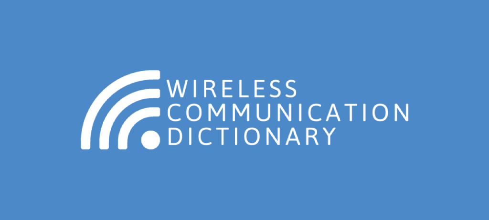

<ion-app>
  <ion-split-pane>
    <ion-menu>
      <ion-content class="menu">
        <ion-row class="wrap-logo">
          
        </ion-row>
        <ion-list class="menu-list">
          <ion-menu-toggle auto-hide="false">
            <ion-item [routerDirection]="'root'" [routerLink]="'/list'" detail="false" class="menu-list-item" lines="none">
              <ion-label>
                  {{lang ? 'Нүүр' : 'HOME'}}
              </ion-label>
            </ion-item>
            <ion-item [routerDirection]="'forward'" [routerLink]="'/recently'" detail="true" class="menu-list-item" lines="none">
              <ion-label>
                  {{lang ? 'Сүүлд үзсэн' : 'RECENTLY'}}
              </ion-label>
            </ion-item>
            <ion-item [routerDirection]="'forward'" [routerLink]="'/favorite'" detail="true" class="menu-list-item" lines="none">
              <ion-label>
                  {{lang ? 'Таалагдсан' : 'FAVORITE'}}
              </ion-label>
            </ion-item>
            <ion-item detail="false" class="menu-list-item" lines="none">
              <ion-label>
                  {{lang ? 'Хэл' : 'LANGUAGE'}}
              </ion-label>
              <ion-row slot="end" class="lang-control">
                <ion-label class="lang-text">{{lang ? 'MNG' : 'ENG'}}</ion-label>
                <ion-toggle (ionChange)="changeLang()" [checked]="lang" color="light"></ion-toggle>
              </ion-row>
            </ion-item>
            <ion-item [routerDirection]="'forward'" [routerLink]="'/about'" detail="false" class="menu-list-item" lines="none">
              <ion-label>
                  {{lang ? 'Тухай' : 'ABOUT'}}
              </ion-label>
            </ion-item>
          </ion-menu-toggle>
        </ion-list>
      </ion-content>
    </ion-menu>
    <ion-router-outlet main></ion-router-outlet>
  </ion-split-pane>
</ion-app>
